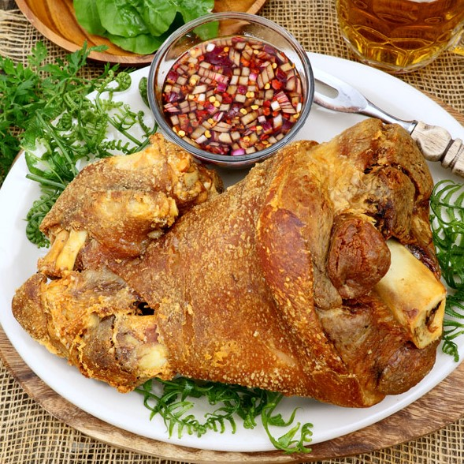

Crispy Pata
Crispy pata is a Filipino dish consisting of deep fried pig trotters or knuckles served with a soy-
vinegar dip. It can be served as party fare or an everyday dish. Many restaurants serve boneless
pata as a specialty. The dish is quite similar to the German Schweinshaxe
Ingredients
- 1 piece whole pig leg cleaned
- Dried bay leaves
- Whole peppercorn
- Salt
- Water
- Black Pepper
- Garlic Powder
- Cooking Oil
How to Cook:
- Boil the whole pig leg then put the bay leaves, salt, and peppercorns
- Wait until the whole pig leg is tender.
- Strain the whole pig leg until temperature sets down.
- Rub the leg with garlic powder, ground black pepper, and remaining salt. Let stand for 15 minutes to absorb the rub.
- Heat a clean large cooking pot (preferably with cover) and pour-in cooking oil.
- When the oil becomes hot, deep fry the rubbed pork leg. Continue cooking in medium heat until one side
becomes
crispy, and then cautiously flip the leg to crisp the other side. - Turn-off the heat; remove the crispy pork leg; and transfer it to a wide serving plate.
- Enjoy and eatwell!